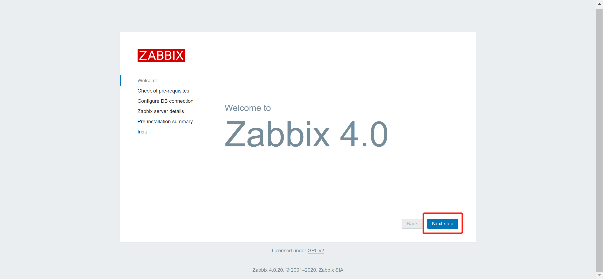
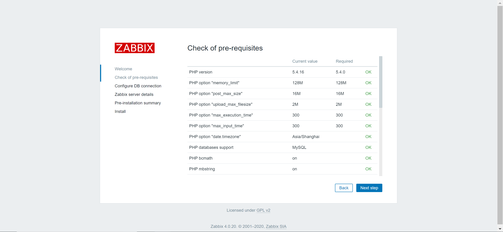
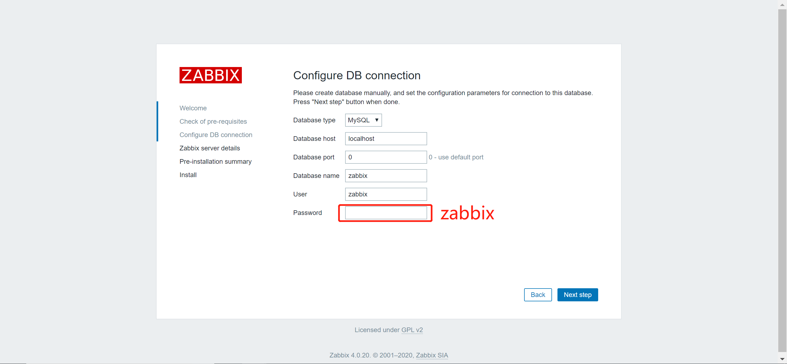
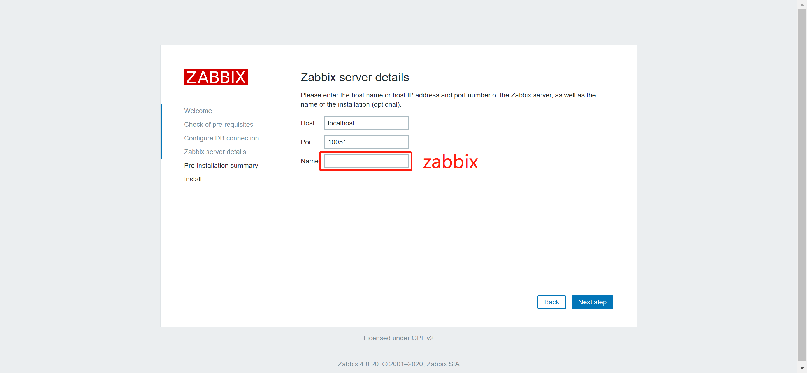
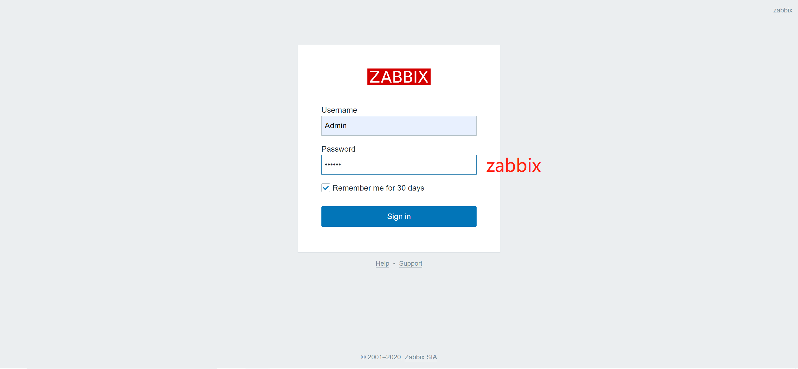
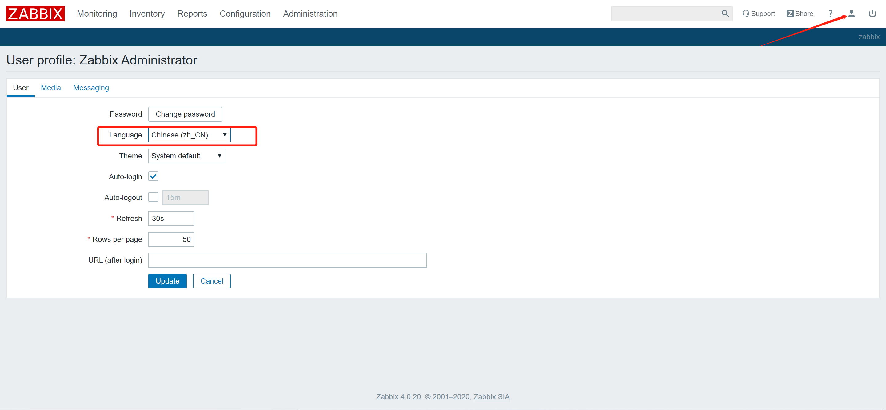
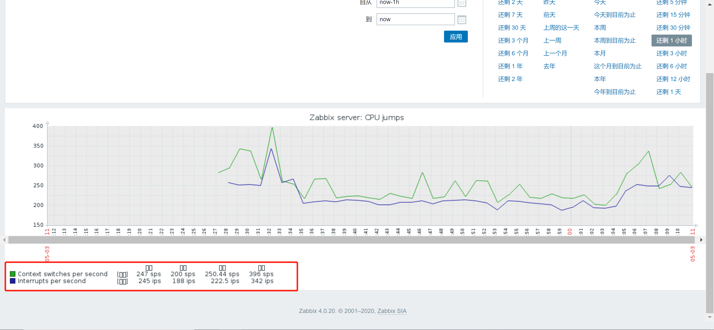
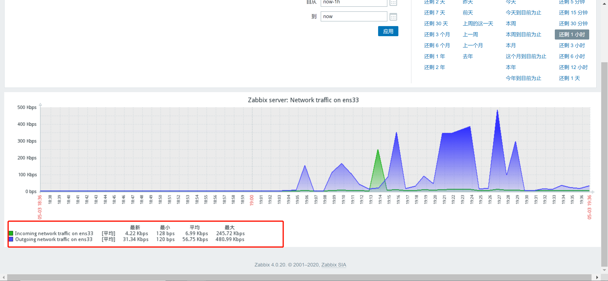

安装
mast服务端
yum源
rpm -ivh https://mirrors.tuna.tsinghua.edu.cn/zabbix/zabbix/4.0/rhel/7/x86_64/zabbix-release-4.0-1.el7.noarch.rpm
sed -i 's#repo.zabbix.com#mirrors.tuna.tsinghua.edu.cn/zabbix#g' /etc/yum.repos.d/zabbix.repo
rpm -ivh https://mirrors.tuna.tsinghua.edu.cn/zabbix/zabbix/3.4/rhel/7/x86_64/zabbix-release-4.0-1.el7.noarch.rpm -- 老版本不推荐使用
zabbix服务端相关软件
zabbix服务程序软件: zabbix-server-mysql
zabbix服务web软件: zabbix-web-mysql httpd php
数据库服务软件: mariadb-server
yum install -y zabbix-server-mysql zabbix-web-mysql httpd php mariadb-server zabbix-agent
软件配置
vim /etc/zabbix/zabbix_server.conf
grep "^[a-Z]" /etc/zabbix/zabbix_server.conf
DBHost=localhost
DBName=zabbix
DBUser=zabbix
DBPassword=zabbix
配置 Apache 的配置文件/etc/httpd/conf.d/zabbix.conf，修改时区
vim /etc/httpd/conf.d/zabbix.conf
php_value date.timezone Asia/Shanghai
数据库的配置
systemctl start mariadb.service
systemctl enable mariadb.service
创建zabbix数据库--zabbix
# 设置数据库的初始密码
mysqladmin password 123456
mysql -uroot -p123456
# 创建zabbix库
create database zabbix character set utf8 collate utf8_bin;
grant all privileges on zabbix.* to zabbix@localhost identified by 'zabbix';
flush privileges;
在zabbix数据库中导入相应的表信息
zcat /usr/share/doc/zabbix-server-mysql-4.0.20/create.sql.gz | mysql -uzabbix -pzabbix zabbix
启动相关服务
systemctl start zabbix-server.service httpd mariadb.service
systemctl enable zabbix-server.service httpd mariadb.service
登录zabbix服务端web界面, 进行初始化配置
http://10.0.0.71/zabbix/setup.php
10051 zabbix-server 服务端端口号
10050 zabbix-agent 客户端端口号
/etc/zabbix/web/zabbix.conf.php -- 记录web页面初始化信息





设置中文

中文乱码

解决方法:安装字体并替换现有字体
yum install wqy-microhei-fonts -y
cp /usr/share/fonts/wqy-microhei/wqy-microhei.ttc /usr/share/zabbix/assets/fonts/graphfont.ttf
刷新 
agent
yum源
rpm -ivh https://mirror.tuna.tsinghua.edu.cn/zabbix/zabbix/4.0/rhel/7/x86_64/zabbix-agent-4.0.11-1.el7.x86_64.rpm
配置zabbix-agent
grep "^[a-Z]" /etc/zabbix/zabbix_agentd.conf
PidFile=/var/run/zabbix/zabbix_agentd.pid
LogFile=/var/log/zabbix/zabbix_agentd.log
LogFileSize=0
Server=192.168.8.10
ServerActive=192.168.8.10
Hostname=Zabbix server
启动zabbix-agent并检查
systemctl start zabbix-agent.service
systemctl enable zabbix-agent.service
netstat -lntup|grep 10050
tcp 0 0 0.0.0.0:10050 0.0.0.0:* LISTEN 16145/zabbix_agentd
tcp6 0 0 :::10050 :::* LISTEN 16145/zabbix_agentd
zabbix-get检查测试(mast)
yum install zabbix-get -y
zabbix_get -s 192.168.8.11 -k system.cpu.util[,idle]
99.899866 # 当有返回值的时候表示添加成功